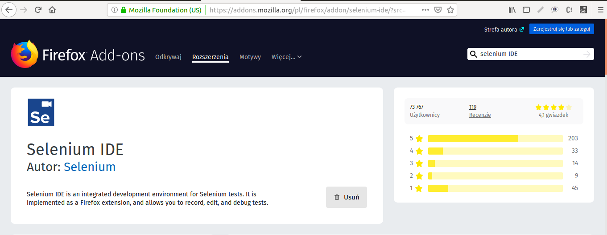

Selenium IDE to zintegrowane środowisko deweloperskie do testowania Web aplikacji. Jest ono zaimplementowane jako dodatek do przeglądarki Mozilla Firefox, dzięki czemu nie trzeba się przejmować instalacją skomplikowanych narzędzi, czy dodatkową konfiguracją środowiska testowego.
Po dodaniu wtyczki do przeglądarki, narzędzie jest gotowe do pracy.
Komendy Selenesse mogą mieć maksymalnie dwa parametry:
Parametry nie są zawsze wymagane.
Zależy to od wybranych komend.
XPATH używamy, aby lokalizować elementy i atrybuty w dokumencie HTML na stronie. Zawiera on ponad 100 wbudowanych funkcji. XPATH używa wyrażeń ścieżki do wybierania elementów w dokumencie. Używamy gdy nie ma na stronie podstawowych lokalizatorów.
//step//step...
<body>
<h1>Czas na zakupy</h1>
<ul class="Lista zakupów">
<li>ziemniaki</li>
<li>mandarynki</li>
</ul>
</body>
xpath=//h1[contains(text(),'Czas na zakupy')]
xpath=//h1[contains(text(),'Username')]
xpath=//ul[@class='Lista zakupow']//li[1] - Ziemniaki
xpath=//ul[@class='Lista zakupow']//li[2] - Mandarynki
Status: ZAŁADOWANO